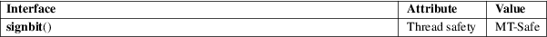

signbit − test sign of a real floating-point number
Math library (libm, −lm)
#include <math.h>
int signbit(x);
Feature Test Macro Requirements for glibc (see feature_test_macros(7)):
signbit():
_ISOC99_SOURCE || _POSIX_C_SOURCE >= 200112L
signbit() is a generic macro which can work on all real floating-point types. It returns a nonzero value if the value of x has its sign bit set.
This is not the same as x < 0.0, because IEEE 754 floating point allows zero to be signed. The comparison −0.0 < 0.0 is false, but signbit(−0.0) will return a nonzero value.
NaNs and infinities have a sign bit.
The signbit() macro returns nonzero if the sign of x is negative; otherwise it returns zero.
No errors occur.
For an explanation of the terms used in this section, see attributes(7).

C11, POSIX.1-2008.
POSIX.1-2001, C99.
This function is defined in IEC 559 (and the appendix with recommended functions in IEEE 754/IEEE 854).
copysign(3)